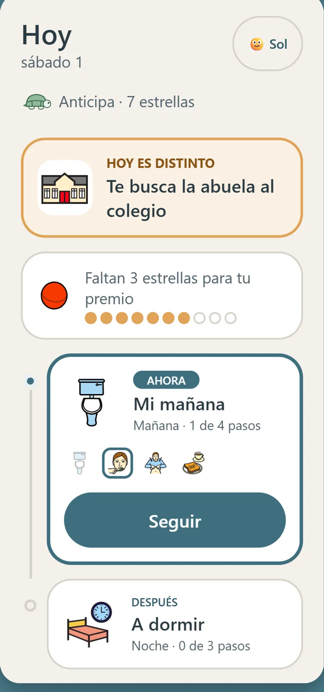
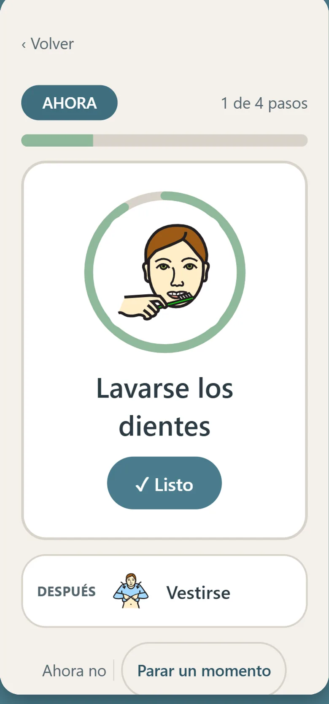
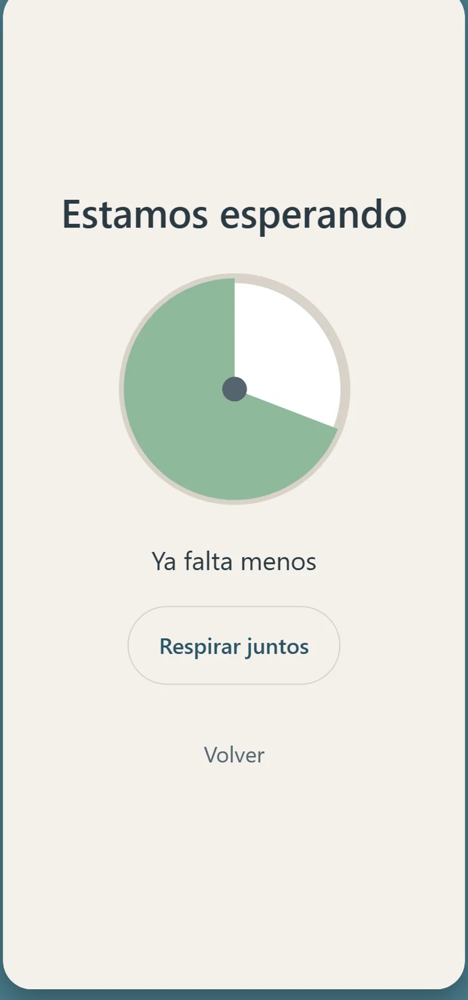
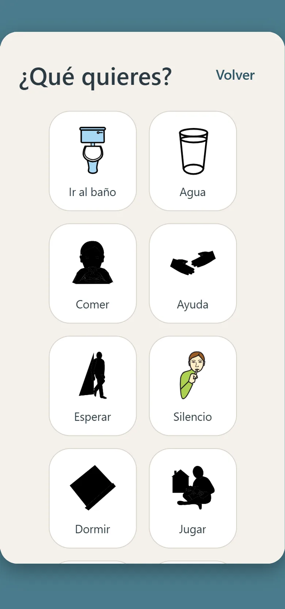
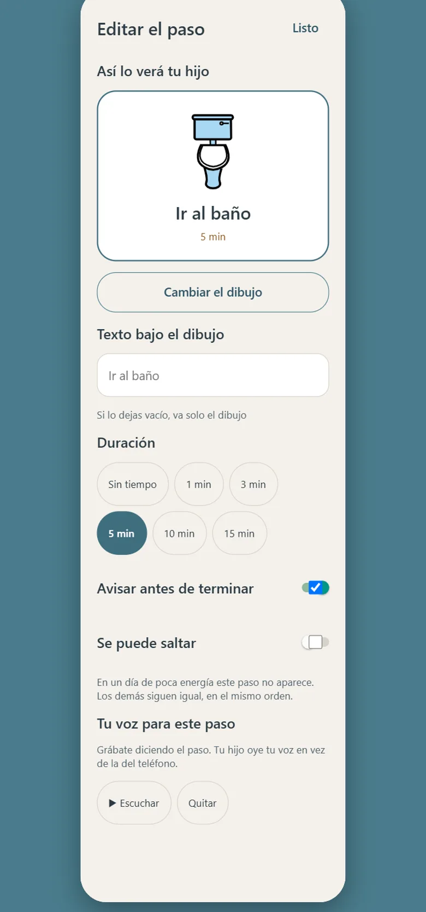
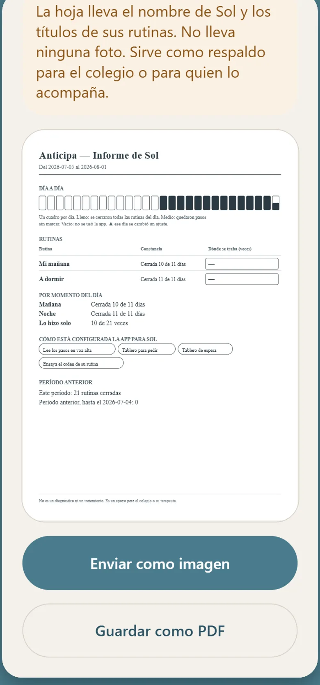
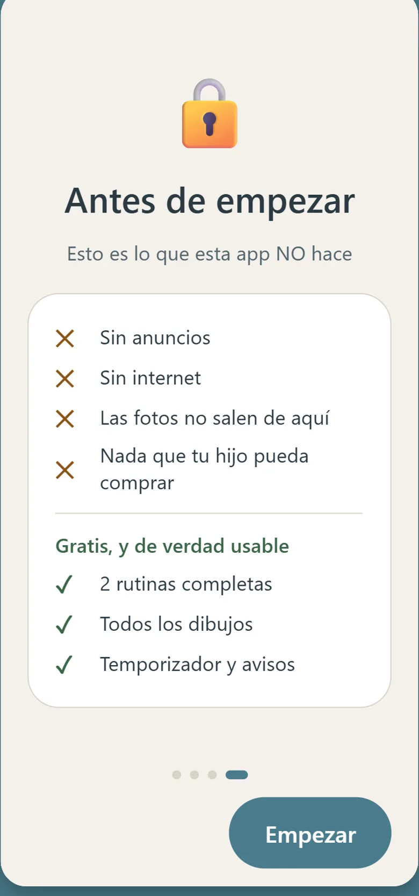

Para qué sirve
Lo que le cuesta no es la rutina: es no saber qué viene.
Anticipa le pone el día delante, dibujado. Ve qué toca ahora, qué viene después y
cuánto falta, sin depender de que se lo recuerdes. Y cuando algo cambia —hoy lo
busca la abuela, mañana hay dentista— se entera antes, no en la puerta.
Tú dejas de ser el que repite veinte veces lo mismo. Él empieza a llegar solo
hasta los zapatos.
-
El día, dibujadolo que ve el niñoQué toca ahoraPrimero–despuésTemporizador visualAviso antes del cambioTablero de espera¿Cuál primero?
-
Que sea tu casay no dibujos genéricosFotos propias121 pictogramas20 rutinas listasDistinta cada díaLámina para la paredCompartir sin nube
-
Que se adapte a élajustes sensorialesAlto contrasteVoz que lee los pasosCelebración calmadaEstrellas por un premio realVarios hijos
Por dentro
Así se ve.







Por qué las familias la eligen
La rutina te espera.
-
Si el día empieza tarde, no se desarma
El niño retoma donde quedó, sin «empezar de cero». Un paso que hoy no se hizo no es un error en rojo: es simplemente un día distinto.
-
Con las fotos de tu casa
El baño de tu casa, su mochila, su cama. Un pictograma genérico enseña un concepto; una foto de lo suyo le dice qué tiene que hacer ahora. Y esas fotos no salen del teléfono.
-
El tiempo se ve, no se cuenta
El temporizador es una figura que se vacía. «Cinco minutos» no significa nada a los cuatro años; que quede este pedacito, sí.
Para el papá o la mamá
Lo que no vas a encontrar.
-
Sin publicidad
Ninguna. Y menos acá: un anuncio a media rutina no es una molestia, es la rutina rota.
-
Sin internet y sin datos
Funciona en modo avión. Las fotos de tu hijo se quedan en el teléfono, no hay cuenta que crear y no hay servidor nuestro donde guardar nada. Compartir una rutina es mandar un archivo, no subirla a ninguna nube.
-
Sin cobros sorpresa
Nada que tu hijo pueda comprar solo. Lo que cuesta lo decide un adulto y se ve claro, por adelantado.
Qué es y qué no es
Acompaña la rutina. No diagnostica.
Anticipa está pensada con el lenguaje que usan terapeutas y educadoras: apoyos visuales, «primero esto, después aquello», anticipación de los cambios y estrellas que se canjean por un premio de verdad. Describe esas prácticas; no promete resultados ni sustituye a nadie. Es para las familias, y para las profesionales que las acompañan. Ante cualquier duda sobre tu hijo, habla con un profesional.
Cuánto cuesta
Siete días con todo, y dos rutinas para siempre.
Se prueba entera antes de decidir
Los primeros siete días están todos abiertos, sin
tarjeta y sin registro: una agenda visual no se juzga en una pantalla de ejemplo,
se juzga en una mañana de martes.
Después, dos rutinas siguen siendo tuyas para siempre — bloquear
no es borrar: lo que armaste se queda ahí, con sus pasos y sus fotos. El resto se
abre con una suscripción que se cancela desde Google Play cuando quieras.
Saber qué viene tranquiliza.
No es que el niño no quiera: es que el día le llega sin avisar. Cuando lo ve dibujado, deja de ser una orden y pasa a ser un plan que ya conoce.
Todavía no está en Google Play Anticipa está en prueba cerrada. Cuando salga a la tienda, el botón de descarga va acá.